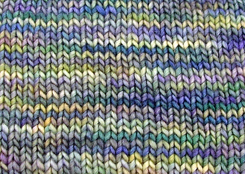
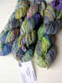
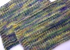
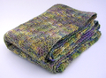

|
||
Premium Patterns Wintry Mix Mitts Love Bytes HawkeyeFree Patterns Kiddie Cadet Summerlin Ruffled Scarf Seamless DS Sock Simply Seamless Pouch Myriads of MushroomsExtras DIY Mitten Blocker Felt Patch Tutorial Yarn Dyeing Tutorial Needle Pouches Knitting Journal |
Silky MerinoReviewed by Alice Schnebly
 Manufacturer: Malabrigo Yarns First LookThere is no doubt that Malabrigo's new Silky Merino line is absolutely stunning. Right away I was taken by how gorgeous the yarn was, even in skein form. The colors are perfect and the silky sheen really adds depth to them. The skeins are very soft and squishy. Even before knitting though, I could tell that each skein was not consistent in its coloring. Knitting it UpWhile winding my first skein, I was extremely happy to find that there were no knots. Overall, I went through 5 skeins of yarn, and found not a single knot. This seems to be a rarity in the yarn business. In yarns like Noro Silk Garden or Debbie Bliss Cashmerino Aran I've found up to five knots per skein. Even three knots (which I've been told is the industry's acceptable number per skein) is a bit excessive. I am glad Malabrigo holds its yarns to a higher standard, as I've never found a knot in their Merino Worsted line either. Silky Merino stays a consistent thickness throughout. While knitting it felt between a DK/ and light worsted weight, and could be used for projects that call for either. A great thing about this yarn is that it would be suitable for a wide variety of projects, depending on the gauge you knit it at. I knit Silky Merino at a gauge of 4.5sts/inch for my Step Ribbed Stole (on size US9 needles) and the fabric is perfectly drapey. The fabric is slightly open, so I wouldn't suggest knitting at this gauge for a garment but it looks great in something like a shawl or a scarf. I also knit up swatches at two other gauges. My swatch on US8s was still fairly open and grew from 5sts/inch to 4.5 sts/inch after washing. I really loved how the yarn knit up on US7's. Before washing, I got 5.75sts/inch and after 5.25sts/inch. I love the look of the small, uniform stitches. The yarn plumped up a bit after washing and created an even and solid fabric. The swatch stayed more true to shape than at the larger gauge. This yarn knit up at a gauge between 5-5.5 sts/inch would probably be suitable for use in a garment, though not as much drape is present at this smaller gauge. It's a WashSilky Merino is a hand wash only yarn. Some people may find this annoying, but once you work with this yarn you will want to take special care to keep your knitted item looking wonderful. I washed both my swatches in tepid water using Kookaburra Delicate wool wash. I used light agitation, and then let my items soak for thirty minutes. No dye bled from the yarn at all. After I removed the excess water, I laid my items out flat to dry. The stitches relaxed significantly. My swatch knit at the smaller gauge held its shape noticeably better than the larger gauge swatch. It also has more memory and more resilience after stretching. Pros
Cons
ConclusionsI think this blend of silk and wool is absolutely perfect. I can see characteristics of both present in this yarn. I love the sheen and drape provided by the silk, and the softness is divine. I also love that the wool adds real body to the yarn. It feels sturdy and substantial while knitting. The presence of wool adds a bit of memory that isn't there with just silk. I feel that the wool also gave my stitches a pretty and even appearance and creates a loft that makes the stitches even out and plump up after washing. This yarn is easy to spit splice together as well, which is a big plus in a large project. I could see using this yarn over and over. It's the perfect combination of luxury and durability. The only downside I can find in this yarn, is that the colorways aren't consistent from skein to skein. This doesn't cause a problem when working on a smaller project, but if purchasing yarn for a larger item it's something to keep in mind. If you have a chance to see the yarn in person before buying, you can try to match your skeins as much as possible. Also, if ordering online, it doesn't hurt to ask the shop to send you similarly colored skeins. Most places will be accommodating and helpful. |
   Recent ReviewsRecent Posts
 Our Favorites
|
| © 2007 KathrynIvy.com | ||
{kind=link}
{kind=link}
{kind=link}